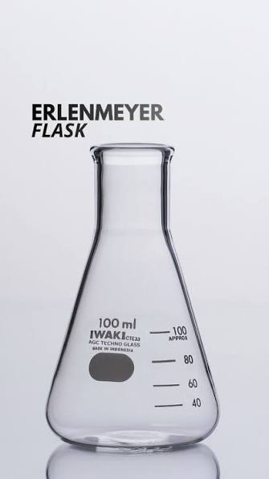

Gelas Ukur
.jpg)
Gelas Kimia (Beaker)
Memahami laboratorium kimia itu sangat mudah jika kita tahu bahwa pada dasarnya seluruh alat laboratorium dirancang berdasar dua fungsi utama.
Hampir semua alat kaca di laboratorium kimia dibuat untuk memenuhi salah satu dari dua kebutuhan dasar ini:
Kenapa dua alat ini sangat penting? Karena dua alat ini adalah perwakilan sempurna dari dua prinsip utama di atas!
Gelas Ukur
Gelas Kimia (Beaker)
"Gelas Kimia itu ibarat **Mangkuk Masak / Panci**, fungsinya buat mengaduk dan memasak bahan. Sedangkan Gelas Ukur itu ibarat **Sendok Takar / Botol Susu Bayi**, fungsinya cuma buat mengukur takaran air dengan pas, bukan buat dipakai memasak di atas kompor."
Semua alat laboratorium kelas 10 di bawah ini pada dasarnya adalah turunan/pengembangan dari salah satu dari dua prinsip utama di atas, ditambah alat pendukung keselamatan.

Fungsi: Tempat mereaksikan zat kimia dalam skala/jumlah yang sangat sedikit (mikro).
Implementasi Prinsip: Versi "mini" dari gelas kimia. Sangat aman dipanaskan secara langsung di atas api spirtus untuk reaksi cepat.

Fungsi: Menampung dan mengocok larutan, serta tempat utama proses titrasi.
Implementasi Prinsip: Tempat mereaksikan zat dengan leher sempit agar saat larutan dikocok melingkar, cairan tidak memercik keluar.

Fungsi: Membuat atau mengencerkan larutan dengan volume dan konsentrasi yang sangat presisi.
Implementasi Prinsip: Tingkat tertinggi alat pengukur volume. Memiliki 1 garis batas tunggal di lehernya untuk ketelitian tingkat tinggi.
Fungsi: Mengukur volume larutan dengan tingkat ketelitian sedang.
Implementasi Prinsip: Wadah tinggi dan sempit bergaris skala rapat yang dirancang khusus untuk pengukuran volume (tidak boleh dipanaskan).